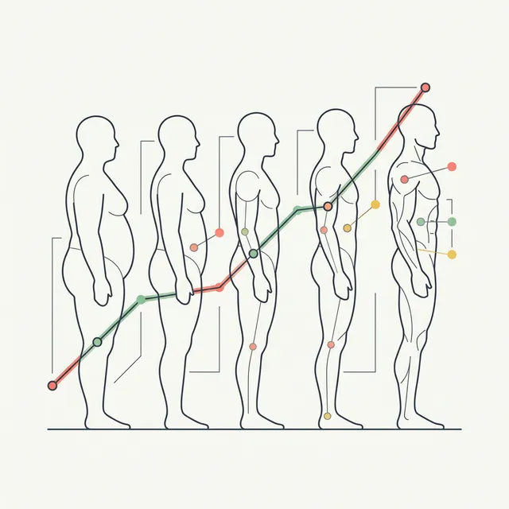
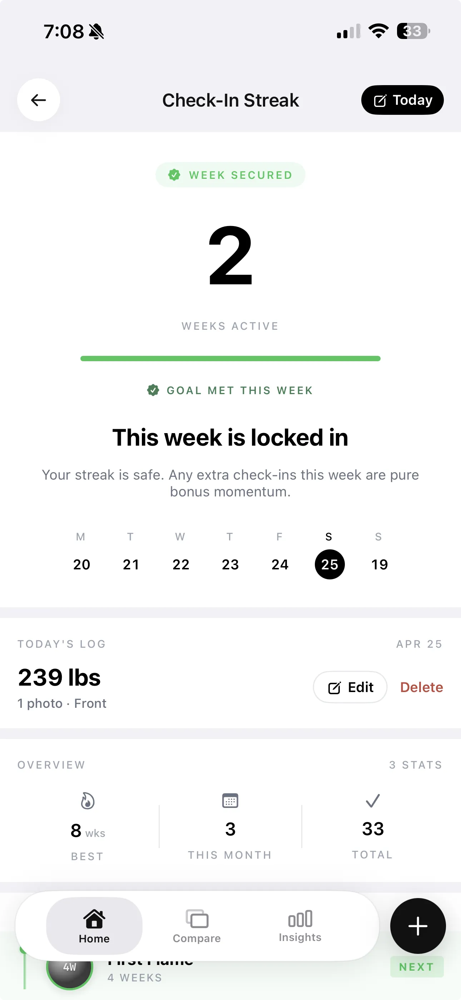

How to Track Muscle Gain Progress: 5 Methods Ranked (Photos, Measurements, DEXA & AI)
From free progress photos to clinical DEXA scans — here are the five best methods for tracking muscle gain, ranked by how easy they actually are to use consistently.

You have been training consistently for three months. The scale is up four pounds. You're lifting heavier than you were in January. But you look in the mirror and genuinely cannot tell if your body has changed. The photo from last week looks the same as the one from eight weeks ago — or maybe it's slightly different, it's hard to say.
This is one of the most frustrating parts of building muscle: the scale measures gravity, your lifts measure skill and neural adaptation, and neither of those tells you what you actually care about — whether you're gaining lean mass and keeping fat gain minimal. You need tools designed to track body composition, not just body weight.
Here are five methods, ranked by accessibility, with an honest account of what each one can and cannot tell you.
What "tracking muscle gain" actually means
Tracking muscle gain is really answering two questions simultaneously: are you gaining lean mass, and are you keeping fat gain in check? You need both signals. Gaining five pounds of scale weight could be five pounds of muscle (great), five pounds of fat (not the goal), or two pounds of muscle plus three pounds of fat (acceptable but improvable). The scale alone gives you a number. It cannot tell you what that number is made of.
The five methods below each answer a piece of this puzzle. No single method answers both questions reliably and cheaply. The practical solution is to combine two or three of them based on your situation and how much friction you'll actually tolerate week over week.
Method 1: Progress photos
Accessibility: Free. Frequency: Weekly. Accuracy: Qualitative — no numbers.
Progress photos are the most accessible tracking method that exists and the one most people undervalue. A smartphone, consistent lighting, and a fixed spot in your bathroom are all you need. Done correctly, weekly photos capture changes that are invisible to the eye day-to-day but obvious when you compare eight weeks of data side by side.
The key is standardization. Variable lighting, variable distance, and variable poses make comparison impossible and create false impressions of change. The protocol is simple: same time of day (morning, fasted, before eating), same natural light source, same distance from the camera, same three poses — front relaxed, side, and back. Lock these variables and your photo library becomes a reliable timeline.

The honest limitation: photos are subjective. Lighting alone can make you look dramatically leaner or softer than you actually are. You cannot extract a body fat percentage or a lean mass number from a photo by eye. What photos give you is visual evidence and motivational data — and both are genuinely valuable, especially when the scale isn't moving.
Method 2: Tape measurements
Accessibility: Free (a $3 measuring tape). Frequency: Monthly. Accuracy: Objective numbers, but limited interpretation.
Tape measurements give you objective numbers that photos cannot. Six key measurements capture most of what matters for tracking a muscle-building phase: chest, shoulders, upper arm (flexed), waist, hips, and thigh. Take them monthly under consistent conditions — same time of day, same hydration state — and you have a longitudinal dataset that's hard to argue with.
The pattern you want to see during a muscle-building phase: arms and shoulders growing, chest filling out, waist staying the same or only increasing slightly. Growing limbs with a stable waist is the clearest signal that your composition is shifting toward lean mass. Waist and hips growing faster than your arms suggests you're in a caloric surplus that's tilted toward fat.
The honest limitation: tape measurements cannot distinguish fat gain from muscle gain in a single measurement. A growing arm circumference could mean bigger biceps or more subcutaneous fat over the biceps — you cannot tell from the tape alone. Combined with photos, though, measurements become considerably more informative.
Method 3: Body weight plus trend tracking
Accessibility: Free (a basic bathroom scale). Frequency: Daily weigh-ins, weekly averages. Accuracy: Low for body composition, useful for rate-of-gain context.
The scale is not useless — it's just misused. Daily weight fluctuations of one to three pounds from water, food volume, and sodium are noise. The signal lives in the weekly average. Take your weight every morning before eating and after using the bathroom, average the seven readings, and compare weekly averages over a month.
What the rate of gain tells you: gaining 0.5 to 1 lb per week on average suggests a relatively lean bulk — most of that is lean mass. Gaining two or more pounds per week reliably means a significant portion is fat, because the human body cannot synthesize muscle that fast regardless of how good your program is. Scale trend does not tell you the composition of what you're gaining, but it gives you a rough sanity check on whether you're in the right range.
The honest limitation: body weight tracks mass, not composition. A flat scale during a recomp can mean you're doing everything right — gaining muscle while losing fat simultaneously — but the scale gives you no credit for that. And a rising scale during a bulk tells you nothing about what's rising.
Method 4: AI body composition from photos
Accessibility: Low cost (apps typically free tier or $5-10/month). Frequency: Weekly. Accuracy: Estimates — useful for trend tracking, not clinical measurement.
AI body composition analysis bridges the gap between raw photos (which give you visuals but no numbers) and clinical measurement (which gives you numbers but requires facility access). Apps like GainFrame analyze your progress photos and return estimates for body fat percentage, FFMI (Fat-Free Mass Index), and per-muscle development scores across 12 muscle groups. You take a photo, the AI runs analysis, and you get a structured data point that you can track over time.
The value is in the trend, not any individual reading. A single AI body fat estimate has meaningful uncertainty — lighting, pose angle, and body type all affect the output. But if your estimated body fat percentage is trending down over 8 weeks while your FFMI holds steady or rises, that's a consistent signal that your composition is moving in the right direction. That trend is real information, even if any single week's number carries error bars.

GainFrame is iOS-only and uses Google Gemini AI to analyze photos. Photos are never stored on the server — analysis happens and data is saved locally on your device using SwiftData, with no account required. The free tier includes 25 lifetime analyses; Pro is $5.99/month for unlimited weekly check-ins. The output includes a GainFrame Score, estimated body fat percentage, FFMI, a muscle map across 12 areas, side-by-side compare, and a Deep Dive report.
The honest limitation: AI body composition is an estimate derived from a photo, not a direct measurement. It is not equivalent to DEXA, InBody, or any clinical tool. Treat it as a weekly signal for trend tracking — not as an absolute number to report as ground truth.
Method 5: DEXA scan or InBody
Accessibility: $100–$200 per scan, requires a facility. Frequency: Every 3–6 months. Accuracy: Highest available outside a research lab.
Dual-energy X-ray absorptiometry (DEXA) is the gold standard for body composition measurement available to the general public. It gives you precise fat mass, lean soft tissue mass (which closely correlates with skeletal muscle), and bone mineral density — segmented by region. InBody is a high-end bioelectrical impedance device that many gyms and sports medicine clinics offer; it's less accurate than DEXA but far more accessible and priced similarly.
DEXA is the single best tool for knowing exactly where you stand. One scan at the beginning of a training block and one at the end gives you a precise before-and-after that eliminates most of the ambiguity of home tracking. If your DEXA shows you gained two pounds of lean soft tissue over 16 weeks, that's a reliable signal — not an estimate.
The honest limitation: DEXA costs $100–200 per scan at a sports medicine clinic, radiology center, or dedicated body composition service. Most people cannot justify scanning weekly or even monthly. And scans only capture a moment in time — you have no data on what happened between your last scan and your current one. That gap is where the other four methods live.
How to combine them: the practical stack
The best tracking system is not the most accurate one — it's the one you'll actually use. Here's a practical stack for serious lifters who want real data without building a spreadsheet career out of it:
Weekly: Progress photos (Method 1) plus AI body composition check-in (Method 4) plus scale weight logging (Method 3). This takes under five minutes. You get visual evidence, trend data, and estimated body composition numbers every seven days.
Monthly: Tape measurements (Method 2). Set a reminder on the first of each month. Takes two minutes. Adds objective circumference data that AI and photos cannot provide in isolation.
Every 3–6 months: DEXA or InBody (Method 5) if you have access and it fits your budget. Use it as a calibration point — does your photo and measurement trend match what the scan shows? If yes, your system is working. If not, something in your protocol needs adjustment.
Quick reference: 5 methods at a glance
| Method | Cost | Frequency | What It Tracks | Best For |
|---|---|---|---|---|
| Progress photos | Free | Weekly | Visual physique changes | Baseline visual record; motivation |
| Tape measurements | Free | Monthly | Circumference of key muscle groups | Objective lean mass signal; tracking lagging areas |
| Body weight (trended) | Free | Daily, averaged weekly | Rate of weight gain | Sanity check on whether surplus is reasonable |
| AI body composition | Free–$10/mo | Weekly | Estimated body fat %, FFMI, muscle scores | Weekly trend tracking; identifying weak areas |
| DEXA / InBody | $100–$200/scan | Every 3–6 months | Precise fat mass and lean tissue mass | Accurate baseline; validating home tracking methods |
Why consistency beats accuracy
A DEXA scan four times per year gives you four data points. A weekly progress photo gives you 52. The most accurate method you use four times a year yields less actionable information than the least accurate method you use every week — because trends compound. Missing two months of data between scans means you cannot see what happened when you changed your training split in week six, or whether that caloric adjustment in week nine actually shifted your body composition. Weekly data, even with inherent noise, tells a story that quarterly data physically cannot.
The goal is not to achieve measurement perfection. The goal is to build a tracking habit that generates enough signal to make better decisions — faster. A photo every week beats a DEXA scan once a year, not because photos are more accurate, but because you will actually do them.
Start tracking in 3 steps
- Lock in your photo protocol today. Pick a specific spot, a specific time of morning, and the same three poses. Take your first standardized photo now. Do not wait until you feel "ready" — your starting point is data, not something to be ashamed of.
- Set a weekly check-in reminder. Every Sunday morning. Or every Monday before training. The day does not matter; the consistency does. Pair your photo with an AI analysis if you want numbers. The habit is the thing.
- Book a DEXA at month three. Once you have 12 weeks of photos and measurements, a single DEXA scan tells you whether your home tracking has been accurate. It validates your system and gives you a precise baseline for the next phase.
Turn your progress photos into body composition data
GainFrame analyzes your weekly photos for body fat percentage, FFMI, and 12-area muscle scores — giving you trend data that raw photos alone cannot provide. Free on iOS, no account required.
Download GainFrame Free